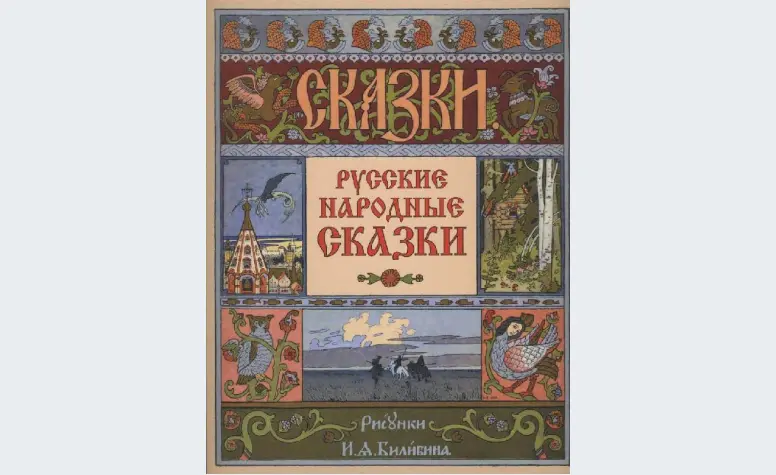
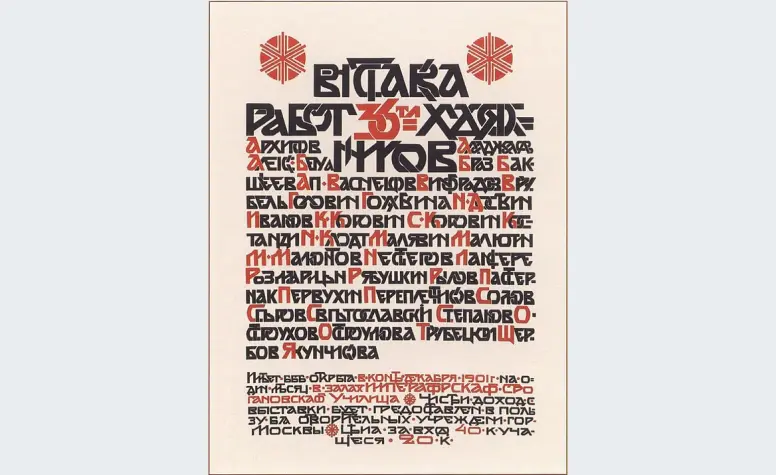
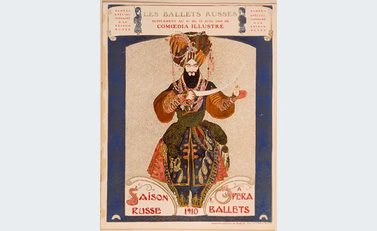
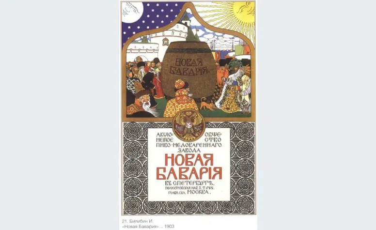
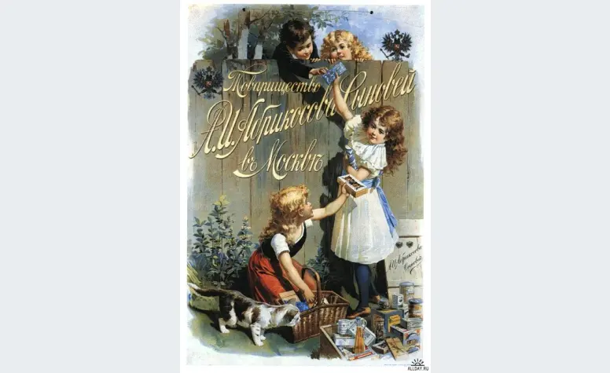
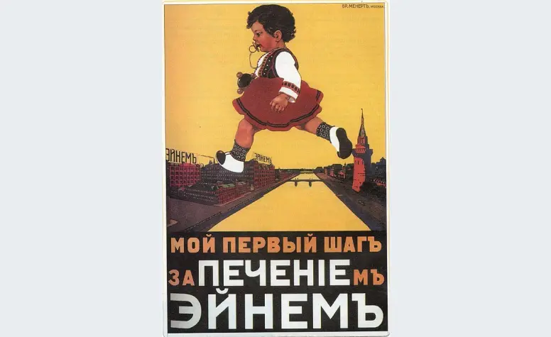
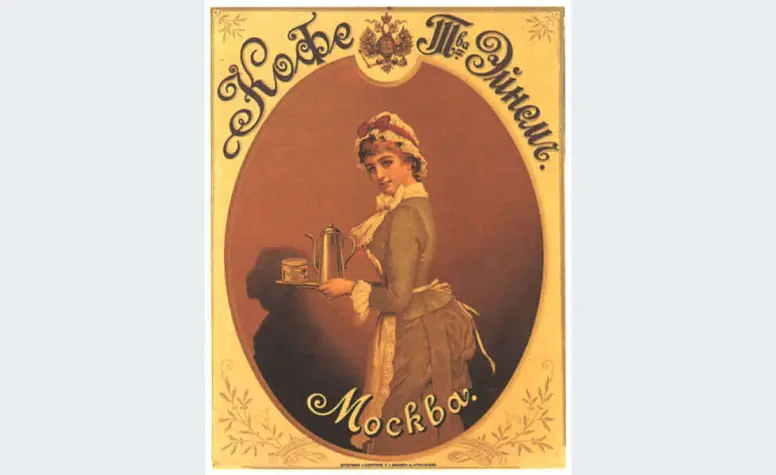

Искусство рекламы в Российской империи
Исследуем, как выглядела реклама в России до 1917 года: кто были её создатели, что она продвигала и какие визуальные тенденции были популярны.
«Мир искусства» и рождение авторского плаката

Иван Билибин. Дизайн обложки сборника «Русские народные сказки», 1900-е годы © Public domainРасцвет художественной рекламы во многом обязан эстетике объединения «Мир искусства». Начав с оформления журналов и книг, его участники привнесли высокие стандарты в работу со шрифтами, графикой и общей композицией. Публику очаровывали орнаментальные сказочные иллюстрации Ивана Билибина, изящные обложки Александра Бенуа, атмосферные зарисовки Петербурга Мстислава Добужинского и душевные работы Елены Поленовой и Марии Якунчиковой.

Михаил Врубель. Афиша первой выставки 36 художников, 1901 год © Public domainВскоре эти мастера обратили своё внимание на рекламные плакаты и афиши, которые ранее считались низким жанром. Теперь подобные работы для театров, выставок и благотворительных событий создавали знаменитые живописцы: Михаил Врубель, Валентин Серов, Лев Бакст, Иван Билибин, Константин Коровин, Виктор и Аполлинарий Васнецовы. В моде был стилизованный древнерусский стиль с отсылками к историческим образам. допускаются исключения.

Лев Бакст. Программа к балету «Шехеразада», костюм шаха Земана, 1910 год © Public domainЭто были уже не примитивные объявления, а полноценные произведения графического искусства, рассчитанные на взыскательного зрителя. Тщательная работа над композицией, создание новых шрифтов и акцент на эстетике положили начало русскому рекламному плакату в его современном понимании. Российские художники встроились в общеевропейский тренд, ярким представителем которого был, например, француз Анри де Тулуз-Лотрек.
Успех был оглушительным: афиша Серова с Анной Павловой к «Сильфиде» превратилась в символ «Русских сезонов», а плакат Врубеля к выставке «36 художников» использовали как обложку каталога.
Влияние кинематографа на рекламную графику
С появлением кино изменился и язык плаката. Например, Поль Ассатуров создал энергичный постер к первому отечественному фильму «Стенька Разин», используя композицию из нескольких ключевых сцен для передачи драматизма.
В 1910-е годы на смену детальной художественности пришла динамика. Тексты стали лаконичнее, цветовая гамма — сдержаннее. Реклама начала ориентироваться на более широкую аудиторию, отходя от исключительной элитарности.
Реклама потребительских товаров: от пива до конфет
Художники работали не только для культурных событий, но и для бизнеса, создавая имиджевую рекламу для шоколада, парфюмерии, алкоголя и других товаров.

Иван Билибин. Реклама пива «Новая Бавария», 1903 год © Public domainИван Билибин, используя свой фирменный сказочный стиль, оформил плакат для пива «Новая Бавария», где изобразил пирующих бояр на фоне Кремля. Такой же принцип — художественная иллюстрация вверху и чёткая информационная часть внизу — он применил и в работе для парфюмерной фирмы «А. Ралле и Ко».

Неизвестный автор. Реклама конфет товарищества «Абрикосов и сыновья», до 1918 года © Public domainОсобенно популярны были рекламные материалы кондитерских фабрик «Эйнем» (позже «Красный Октябрь») и «Абрикосов и сыновья». Их продукция была рассчитана на разный достаток, а обёртки для конфет часто несли развлекательный или познавательный контент для детей.

Мануил Андреев. Рекламный плакат товарищества «Эйнем» «Мой первый шаг за печеньем Эйнем», до 1914 года © Public domainПлакат Мануила Андреева для «Эйнема» с ребёнком, тянущимся к печенью, выполнен в очень современной манере: лаконичный образ, контраст и ясный посыл. Однако в других работах художники часто обращались к узнаваемым художественным образам. Тот же Андреев для оформления кофе цитировал «Шоколадницу» Лиотара, а для конфет «Мишка косолапый» вдохновлялся картиной Шишкина. Персонажи рекламы парфюмерии «Брокар и Ко» напоминали бояр с полотен Константина Маковского.

Мануил Андреев. Товарищество «Эйнем», оформление коробки кофе, до 1917 года © Public domain Мануил Андреев. Этикетка конфеты «Мишка косолапый» производства товарищества «Эйнем», до 1917 года © Public domain
Мануил Андреев. Этикетка конфеты «Мишка косолапый» производства товарищества «Эйнем», до 1917 года © Public domain
Таким образом, реклама в дореволюционной России стала настоящей отраслью искусства. Над ней трудились великие мастера, а её образы уходили корнями в академическую живопись. Именно поэтому старинные афиши, вывески и упаковки до сих пор привлекают внимание зрителей своей детальной проработкой и художественной ценностью.